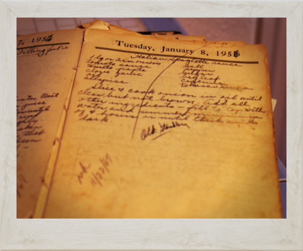
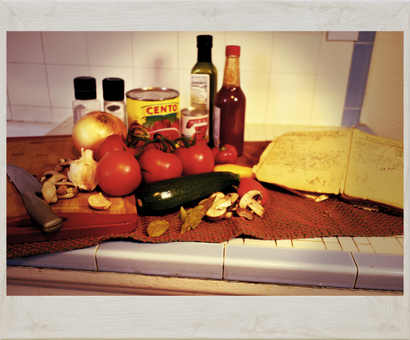
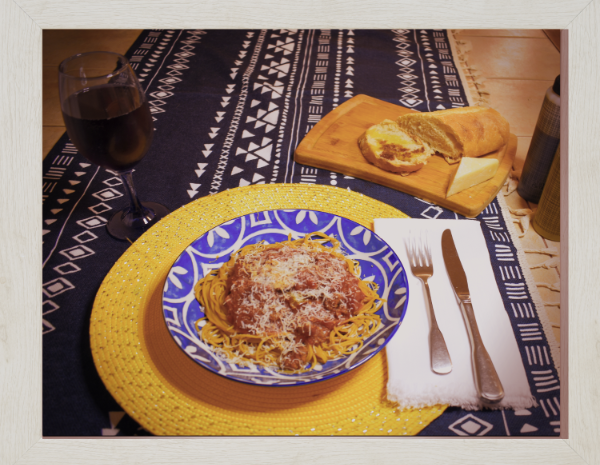

Before my father's cousin sent me my great aunts cookbooks he lamented that he "hasn't had a good red sauce since mom died." He was excited to try cooking it himself when he discovered her cookbooks, but there was one small problem...

Transcript: "Slice and cook onion in oil until clear but not brown. Add all other ingredients - fill to top with water and simmer minimum of 4 hours or until thick and dark."
That's it. That's the recipe. This woman could make this sauce blind. How did she know how much tomato sauce or oil or spices to put in? She just did. And she always made it in the same pot in her same kitchen so she could just "fill to the top" and get the results she wanted.
I cannot know for sure how she cooked it, or even what her sauce tasted like, but anyone comfortable in the kitchen knows how to feel out a recipe. This is my attempt at replicating her sauce based on my own knowledge passed on to me by my mother who learned it from my grandfather after she married my dad. This is the "old standby" as Aunt Babe labeled it. Something our family always has ready to whip out whenever we need something "easy" and the star of many, many family dinners.
This is a sauce base. You can eat it just as is, of course, but I don't think I ever have. You'll get a thicker - and more balanced! - more filling sauce if you add some things to it. My suggestions are italian sausage (you can use hamburger I guess, but why would you when italian sausage is right there?), mushrooms, green bell pepper and zucchini.
The sugar is only to reduce the acidity of the sauce. I often skip it because the onions and bell peppers release their sugars into the sauce and mellow the acid. A dash of red wine is also a great substitute.
Don't rush it! I know that 4 hour minimum cook time seems daunting, but it really does make a difference in the taste. And your home will smell amazing all day.
Don't forget to pair it with a good wine!

| Ingredient | Measurement |
|---|---|
| Onion - White or Yellow | 1 large or 2 small |
| Tomato Sauce or Puree | 1 28 oz can |
| Tomato Paste | 1 6 oz can |
| Garlic | 2-3 cloves sliced |
| Oil - Olive Oil recommended | 2 tbl |
| Allspice | 1 tsp |
| Sugar | 1 tbl |
| Bayleaf | 1-2 leaves |
| Cayenne Pepper | 1/4 tsp or to taste |
| Tobasco Sauce | to taste |
| Salt and Pepper | to taste |
| Pasta of your choice | 8-16 oz |
| Optional | |
| Bulk Italian Sausage | 1 lb |
| Mushrooms | 8 oz sliced |
| Green Bell Pepper | 1 med chopped |
| Zucchini | 1 large or 2 small sliced |
If you're interested in my archiving work for this project, you can follow my blog here:
